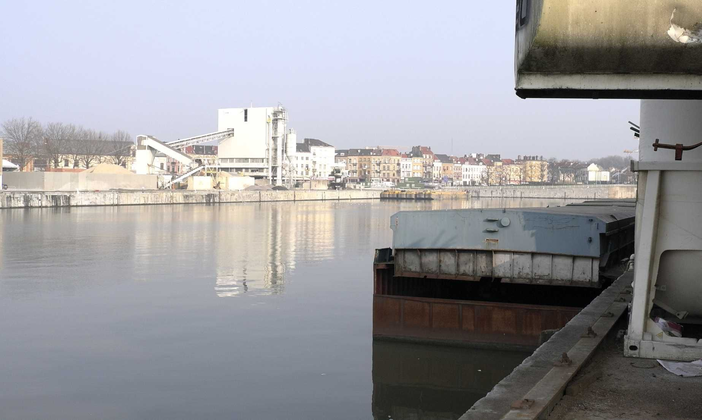

Survolez l'image et agrandissez/réduisez la vue à l'aide de la molette.
Budget: 202 000 € HT (tranche ferme) 472 000 € HT (TC1 + TC2)
Surface: -
Date début: 2012
Date fin: 2013
Maîtrise d'ouvrage: Région de Bruxelles-Capitale, Administration de l’Aménagement du territoire et du Logement
Co-traitant(s): Alexandre Chemetoff & associés
Description:
Bruxelles doit faire face à des défis majeurs, démographiques, économiques, sociaux, environnementaux et territoriaux pour transformer le territoire du canal. La Région, consciente de l’importance de ces enjeux, veut agir pour le renforcement de l’emploi et de l’activité économique, pour la création de logements accessibles à tous, en veillant à la qualité des espaces publics et à la qualité de vie, en se dotant des équipements sportifs, de loisir, d’éducation et culturels nécessaires.
L’étude du Plan-canal a pour but de répondre à ces objectifs. Nous avons pour cela bâti une méthode de travail et défini une philosophie de l’action. Le Plan-canal est destiné à devenir un document de référence, non pas comme un support réglementaire mais comme un outil de mise en œuvre, pour que l’action régionale puisse s’incarner dans des projets.
Afin que la Région puisse prendre position sur son territoire, nous avons proposé “d’inventer” un domaine où elle puisse s’investir en tant que maître d’ouvrage au travers de projets d’aménagement et de construction.
Nous avons appelé ce domaine le Domaine régional. Le repérage, la définition du Domaine régional a constitué la première étape du Plan-canal. Pour le constituer, nous nous sommes appuyés sur les ressources disponibles, pour des raisons économiques, de rapidité de réalisation et de bonne gestion du temps, pour des raisons liées à l’identité et à la qualité des lieux. Dans un second temps, nous proposons de focaliser l’attention sur quelques Projets témoins qui soient significatifs de la volonté régionale,
pour ouvrir de nouveaux espaces d’expérimentation et de communication s’appuyant sur des réalisations concrètes,
lancées à titre d’exemple.
{kind=link}